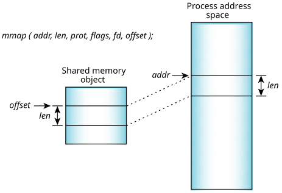

Once you have a file descriptor to a shared memory object, you use the mmap() function to map the object, or part of it, into your process's address space.
The mmap() function is the cornerstone of memory management within QNX OS and deserves a detailed discussion of its capabilities.
void * mmap( void *where_i_want_it,
size_t length,
int memory_protections,
int mapping_flags,
int fd,
off_t offset_within_shared_memory );
In simple terms this says: Map in length
bytes of shared memory at
offset_within_shared_memory in the shared memory
object associated with fd.
The mmap() function will try to place the memory at the address where_i_want_it in your address space. The memory will be given the protections specified by memory_protections and the mapping will be done according to the mapping_flags.
The three arguments fd, offset_within_shared_memory, and length define a portion of a particular shared object to be mapped in. It's common to map in an entire shared object, in which case the offset will be zero and the length will be the size of the shared object in bytes. On an Intel processor, the length will be a multiple of the page size, which is 4096 bytes.

The return value of mmap() will be the address in your process's address space where the object was mapped. The argument where_i_want_it is used as a hint by the system to where you want the object placed. If possible, the object will be placed at the address requested. Most applications specify an address of zero, which gives the system free rein to place the object where it wishes.
| Manifest | Description |
|---|---|
| PROT_EXEC | Memory may be executed. |
| PROT_NOCACHE | Memory should not be cached. |
| PROT_NONE | No access allowed. |
| PROT_READ | Memory may be read. |
| PROT_WRITE | Memory may be written. |
You should use the PROT_NOCACHE manifest when
you're using a shared memory region to gain access to dual-ported
memory that may be modified by hardware (e.g., a video frame
buffer or a memory-mapped network or communications board).
Without this manifest, the processor may return
stale
data from a previously cached read.
| Map type | Description |
|---|---|
| MAP_SHARED | The mapping may be shared by many processes; changes are propagated back to the underlying object. |
| MAP_PRIVATE | The mapping is private to the calling process; changes aren't propagated back to the underlying object. The mmap() function allocates system RAM and makes a copy of the object. |
The MAP_SHARED type is the one to use for setting up shared memory between processes; MAP_PRIVATE has more specialized uses.
You commonly use MAP_ANON with MAP_SHARED to create a shared memory area for forked applications. You can use MAP_ANON as the basis for a page-level memory allocator.
If used with MAP_ANON, then physically contiguous memory is allocated (e.g., for a DMA buffer). You typically use this combination with MAP_SHARED.
/* Map in a shared memory region */
fd = shm_open("datapoints", O_RDWR);
addr = mmap(0, len, PROT_READ|PROT_WRITE, MAP_SHARED, fd, 0);
/* Allocate a physically contiguous buffer */
addr = mmap(0, 262144, PROT_READ | PROT_WRITE | PROT_NOCACHE,
MAP_SHARED | MAP_PHYS | MAP_ANON, NOFD, 0);
You can unmap all or part of a shared memory object from your address space using munmap(). This primitive isn't restricted to unmapping shared memory—it can be used to unmap any region of memory within your process. When used in conjunction with the MAP_ANON flag to mmap(), you can easily implement a private page-level allocator/deallocator.
You can change the protections on a mapped region of memory using mprotect(). Like munmap(), mprotect() isn't restricted to shared memory regions—it can change the protection on any region of memory within your process.